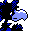

#162
Murkrow
Dark
It seeks shiny things at night, then hides them Flocks gather near treasure glints
Base stats Total 320
HP60
Attack85
Defense42
Speed91
Special42
Details
- Species
- Darkness
- Height
- 1'08"
- Weight
- 46.1 lb
- Catch rate
- 30
- Base exp
- 107
- Growth
- Medium Slow
Level-up moves
LevelMoveType
StartPeck
Lv 8BiteDark
Lv 9Peck
Lv 16HazeIce
Lv 22Wing Attack
Lv 24Night ShadeGhost
Lv 25BiteDark
Lv 28Sucker PunchDark
Lv 31CrunchDark
TM / HM
TM02 Razor WindTM06 ToxicTM07 Shadow BallTM09 Take DownTM10 Double-EdgeTM15 Hyper BeamTM29 PsychicTM31 MimicTM32 Double TeamTM39 SwiftTM42 Dream EaterTM43 Sky AttackTM44 RestTM45 Thunder WaveTM50 SubstituteHM02 Fly